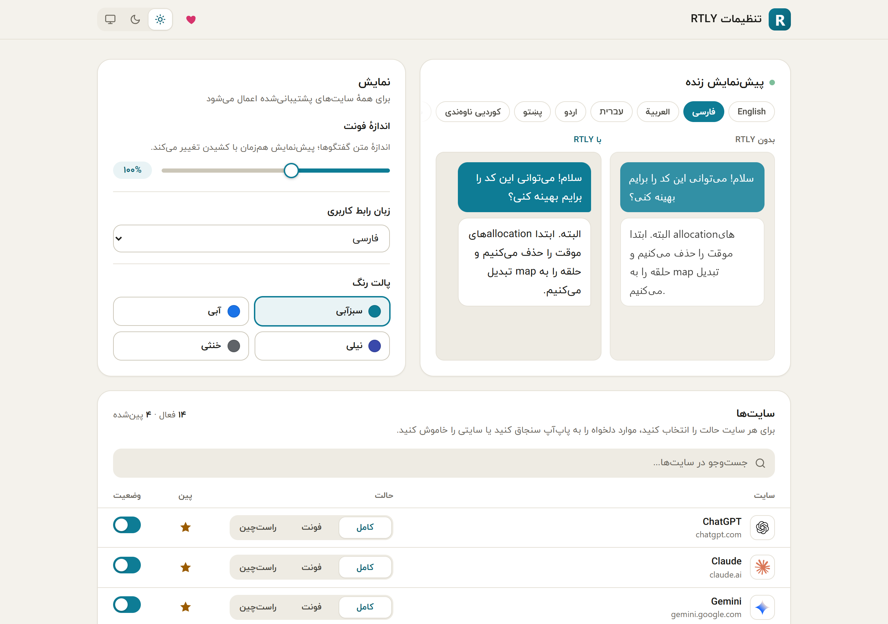
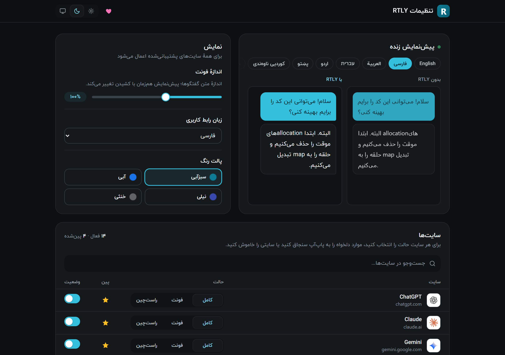
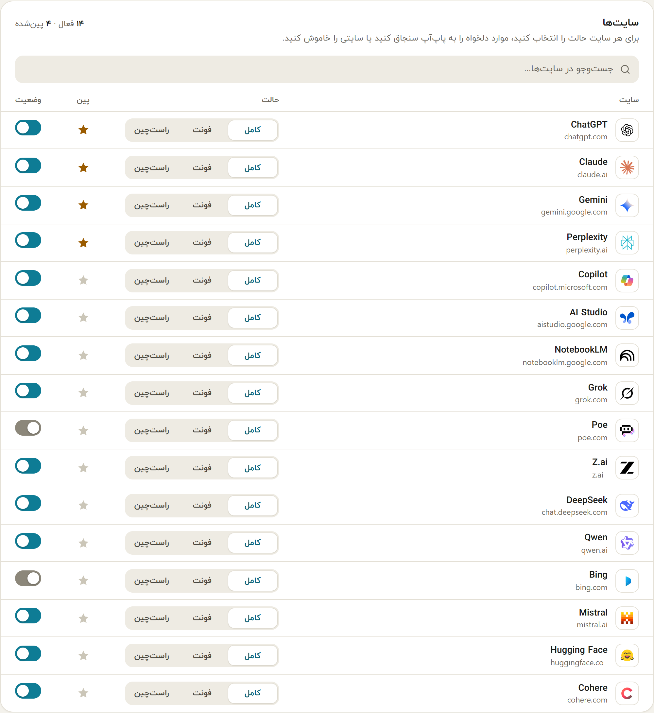
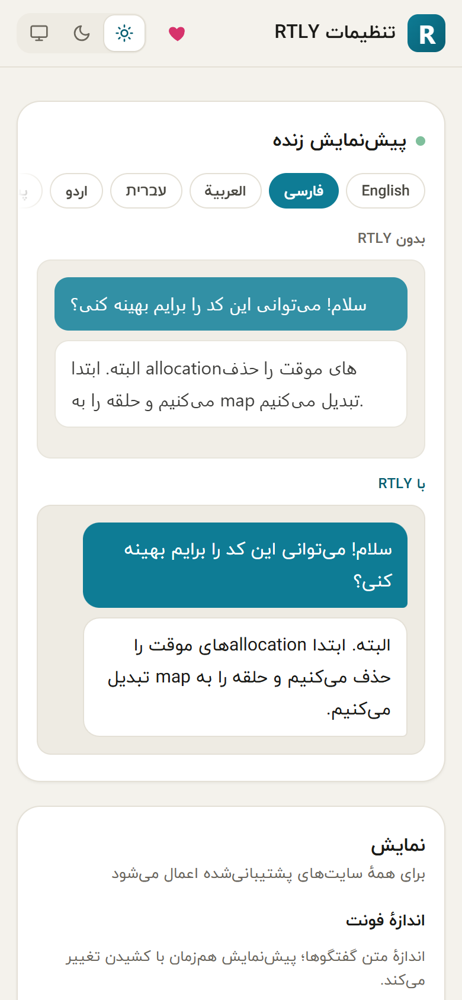

Open it from the popup menu (Settings), or from your browser's extensions page (the extension's Details and Extension options). It opens in its own tab. Changes are saved as you make them, and a "Saved" note flashes at the top.


Header#
At the top are the RTLY name, a heart button (support) and the theme switch: light, dark or system. The theme is shared with the popup.
Live preview#
Two panes show the same short chat, "Without RTLY" and "With RTLY". Tabs above them switch the sample language. The preview follows the font size slider as you drag it, and it follows the interface language you choose. The preview is a picture of the effect, not a live page: it does not read any site.
Display#
| Setting | Choices | Notes |
|---|---|---|
| Font size | 85% to 120% in steps of 5. Default 100%. | Scales chat text on all sites. The popup's A+ and A− buttons change the same value. |
| UI language | 15 languages, shown by their own names. | Changes the popup and this page. It does not change what the chat sites show. Right-to-left languages flip the layout. |
| Color palette | Teal (default), blue, indigo, neutral. | Changes the accent color of the popup and this page. |
Sites#
A table lists all 16 supported sites with a search box above it. For each site you can:
| Column | What it does |
|---|---|
| Site | The site name and its address, with its logo. |
| Mode | Three buttons: Full, Font, RTL. See Modes and direction. Applies to open tabs at once. |
| Pin | A star. Pinned sites are listed first in the popup. Without any choice from you, ChatGPT, Claude, Gemini and Perplexity are pinned. |
| Status | A switch. Off means RTLY does nothing on that site. RTLY reloads the site's open tabs when you change it. |

Narrow windows#
The page adapts to a narrow window, for example when you resize the tab or split the screen.
